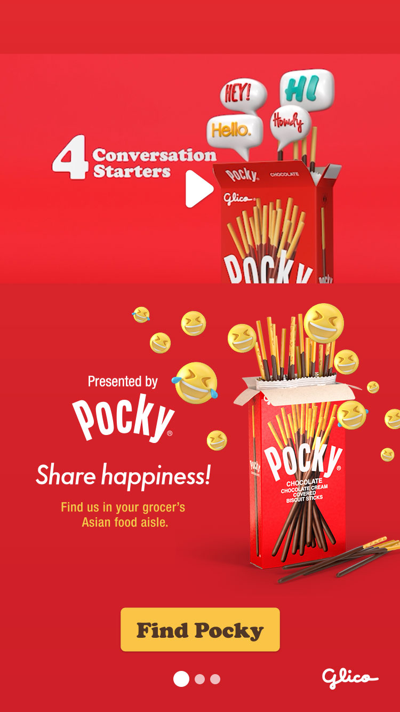
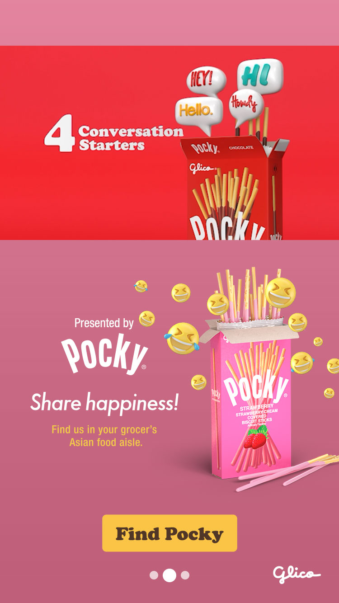
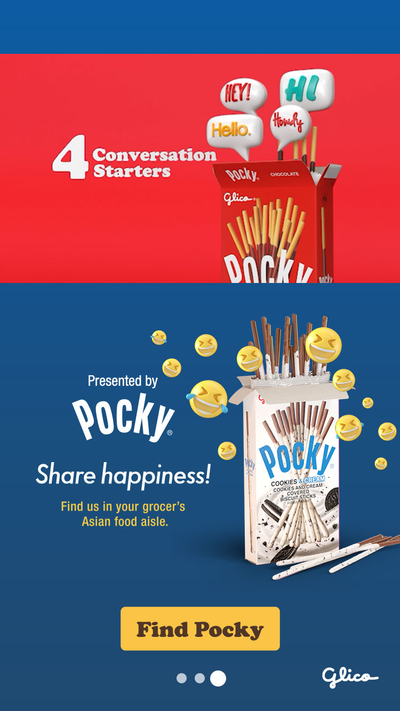

Create something that highlights Pocky’s different flavors while using motion and interaction to drive engagement.
Solution
An experience containing an interactive carousel of animated products and video spot.
Share happiness
No one could have predicted the universal impact Shigetaka Kurita’s first emojis would have on the way we communicate. Today, the “tears of joy” emoji is understood across the world as a symbol of joy and laughter.
Inspired by Pocky’s current video spot, we wanted to build on their existing joy emoji imagery and add user-triggered animations that delighted consumers viewing various flavors.
We experimented with gravity simulations and using collider bodies to show falling Pocky sticks but ultimately decided to abandon it because of time constraints and felt the animations distracted too much from the video.
A simpler “blooming bouquet” animation of emojis worked better as a transition between carousel slides.



Final Solution
In the final design the background colors animate as the carousel slides change. The Pocky boxes remain in the same position giving the look of a match cut while the emojis “bloom”.
Also, the video spot auto-plays on mute when the ad appears but restarts on a user-initiated unmute so that the entire spot can be viewed with sound on.